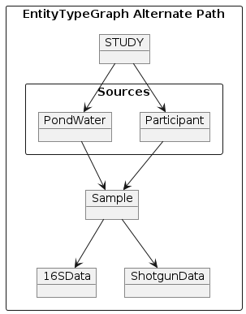

Eda Megastudy
Use cases / Requirements
MapVeu
- Requires Study Node and Study Variables
- Protocols (edges) as Variables. (Will be handled in primary dataset load)
- Species reconciliation (Will be handled in primary dataset load)
- Large number of existing datasets with consistent entity type graph.
- Consistent Ontology (owl) for attribute graph / variables
MicrobiomeDB
- Recreate existing functionality from production mbio site which has the cross study comparison.
- Biom/Habitat/Host specific mega studies (as downstream variables are very different)
ClinEpiDB
The ontology team puts a great deal of effort into harmonizing variables in studies. Our reason for putting so much effort into this is to first have consistent organization of variables but also with the intention of integrating data across multiple studies. This was brought up several times in early meetings.
Cross project
- Handle when the same primary data is loaded for MBio and ClinEpi. There will be extra data nodes for mio that we would want to graft onto clinepi metadata
Advantages of Mega Dataset Workflow
- Enables us to load 0 or more mega studies for a project.
- configurable per project or by list of studies
- Allows us to load biom/habitat specific and all studies within project
The Display Names for the Entity Type Graph are handled in same way as primary dataset load
This is important otherwise how would we choose which names to show? Entity Type names chosen for primary data will often not be appropriate for mega study. for example we may have chosen “Child” as the display name as an override for “Participant”. We need to ensure those custom display names do not end up in the mega study entity type graph.
- use the same ontology workflow step as primary dataset load
- load dedicated entity type rows for each mega study so it can be handled the same way as primary data
The Display Names and other annotation properties are handled in same way as primary dataset load
This is important otherwise how would we choose which names to show? Variable names chosen for primary data will often not be appropriate for mega study (see above). We certainly cannot choose only one variable as a representative because there are dataset specific annotation properties (like variable names from codebook). We either need to include all original variable names (union) or ignore for the mega study
- use the same ontology worklfow step as primary dataset load
- the mega dataset will be associated with a dedicated owl file, same as primary data
Unit Conversion
We cannot enforce at data load time that variables are stored in consistent units. It is important that primary datasets can use units appropriate to them.
- Unit conversion enforced at mega study load time
- Rows in EDA.AttributeValue table (a very tall table) are reused when units are consistent
- I had considered always loading primary data in a base unit and tracking the appropriate unit for the primary dataset. I considered this to be a bad option as it would require us to immediately provide mapping conversions for all study variables. this is not something i want to take on right now. My solution was to enforce consistently and map units to base when there was a need.
- Default ranges and bin widths are recomputed
- use the same plugin to calculate variable stats after unit conversion
- other default annotation properties are applied (see above)
- Study nodes and characteristics
- add study node to primary dataset root nodes
- add study variables from existing studycharacteristics table
- Study nodes are only available for mega study. will not impact primary data
- Reuse Database rows
- Priary EDA.Entity (node) and EDA.Process (Edge) rows are reused
- Primary “dataset specific” tables are optional. MapVeu does will not need these so why make them?
- EDA.AttributeValue rows are reused when units are consistent
- Enable Union of Entity Graphs AND Reuse / Mapping of Entities (Nodes) which are shared
- For a participant which is the same in mbio study as clinepi, we can do the apporopate mapping
- Allow Union or Intersection of variables
- only show variables which are common. Would need at least one variable for each entity type
Object Diagrams
Example 1: Fully Consistent Entity Types
From above we derive the Simplified Entity Type Graph we show to users. In this case it looks identical to any individual entity graph.
Example 2: “Missing” Entity Types (Same Entity Type Graph)
Within a study OR cross study… sometimes nodes are missing. For example, we may not have data for all participants
Because we infer the EntityTypeGraph From distinct set of Connections of nodes .. In this case it looks identical to the one above. We may already have cases like this
Example 3: Union of Datasets with Alternate “Paths”
Here is an example where Dataset 2 does not include repeated measures but they are included for Dataset1. Notice that we still never have multiple parents for the same Entity. Also if we map Entityies from MBio and ClinEpi … we would enforce that upstream Nodes were the same. ie. Mbio couldn’t skip the repeated measure for the same participant if ClinEpi included it.
Repeated Measures
For the user in this case they would see the following Entity Type Graph. There were Sample collections taken from a participants OR sample collections taken from a ParticipantRepeatedMeasure
Source
For the user in this case they would see the following Entity Type Graph. There were Sample collections taken from a participants OR sample collections taken from a ParticipantRepeatedMeasure
 *